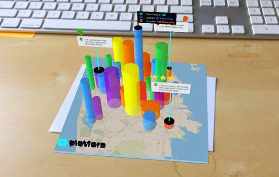
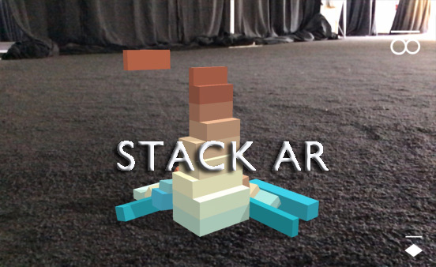

WOWCARD
Aawaz Gyawali
Prasanna Mishra
Roshan Gautam
What is WOWCARD?
Simply put, WOWCARDs are business cards with AR enhancements.
AR?
Augmented Reality
- Brings Digital elements to the real world
- Interative in real time
- Makes information about the surrounding real world of the user interactive and digitally manipulable
Some Technologies Used in AR
- Computer Vision
- Object Recognition
- Geo-Spatial Recognition
- Graphics and Modelling
- Motion Recognition
Problem Statement
Typical Business cards are
- boring
- ineffective
- throwable
- static
- costly to reprint
Objective
To create a better version of cards with the help of Augmented Reality. This will let us build virtual objects on front of the card to deliver more rich content.
The cards will also function as normal cards in the absence of AR ready devices.
Uses
Learning

Gaming

E-Commerce
Limitations
- Lack of AR ready devices.
- Lack of Awareness of AR
Questions?